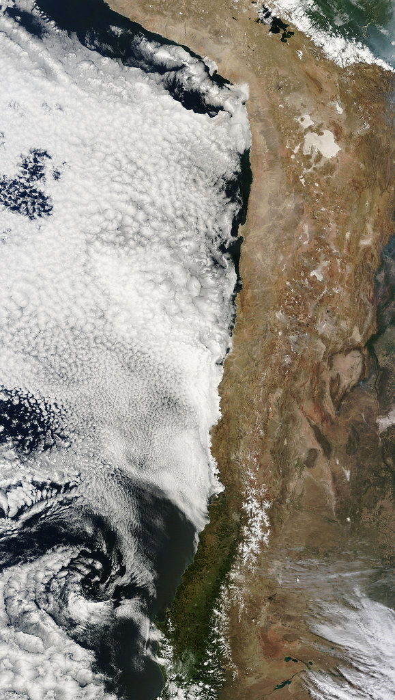

For much of the Western world, the guinea pig — sometimes mistaken by outsiders for a large hamster — is, without question, an adorable pet: a soft-furred little animal that lives in a cage, eats pellets and fresh vegetables, and is part of countless children's upbringing across Europe and North America. In the Peruvian Andes, though, that same animal tells a completely different story: it's a central culinary ingredient, with more than five thousand years of unbroken cooking tradition, and one of the most representative, beloved dishes of Peruvian culinary identity.
Guinea pig domestication in the Andean region — which today spans parts of Peru, Bolivia, Ecuador, and Colombia — actually predates that of many animals we now consider "classic" livestock worldwide. Pre-Incan cultures were already raising guinea pigs as their main source of animal protein in an extremely challenging geographic environment: the Andes, with their extreme altitude, cold temperatures, and terrain poorly suited to the large livestock typical of other parts of the world, found in this small rodent a perfectly adapted solution — able to reproduce quickly, needing little space, and easily fed on locally available pasture and plant scraps.
Beyond its nutritional value, the guinea pig also held an important symbolic and ceremonial place in pre-Hispanic Andean cultures, including the Inca Empire. It was used in religious rituals and offerings to deities, and, in a practice blending traditional medicine and spiritual belief, some Andean healers still perform a ritual known as "cuy cleansing" or shoqma today, rubbing the live animal over a sick person's body in the belief it absorbs physical or energetic ailments, then examining its internal organs after the animal's death for diagnostic clues about the original illness.
Guinea pigs were domesticated in the Andes more than five thousand years ago — long before many of the animals we now think of as "farm animals" elsewhere in the world.
On the strictly culinary side, guinea pig — cuy in Spanish — is prepared in many different ways depending on the Peruvian region: cuy chactado, very popular in Arequipa, is flattened and fried until extremely crispy; cuy al horno, typical of Cajamarca and other northern Andean areas, is slow-cooked with local herbs and spices; and around Cusco and the southern Andes generally, it's commonly grilled or wood-oven roasted and served whole, alongside native potatoes and a variety of traditional spicy sauces known as ajíes. Its flavor is usually described as similar to rabbit, with lean meat and a distinctive texture.
The cultural weight of guinea pig in Peru is significant enough that there's a famous piece of art that perfectly captures it: in several colonial-era churches in Cusco, Indigenous painters converted to Catholicism during the viceroyalty depicted the Last Supper of Jesus Christ with roasted guinea pig as the main dish on the table, instead of the traditional European lamb — a fascinating example of cultural syncretism, where imported religious art was literally adapted to the single most significant ingredient of local culinary tradition.
This very different relationship with the same animal inevitably produces mixed reactions among international visitors: some tourists are surprised, even initially put off, by the idea of eating an animal they emotionally associate with childhood and family pets, while others see it, with genuine curiosity, as one of the most authentic and memorable culinary experiences of their trip to Peru. This cultural tension between "pet" and "food" isn't unique to the guinea pig — it plays out, with its own nuances, with other animals across different world cultures — but rarely as visibly and directly as in this particular case.
Peru is, by a wide margin, the world's leading producer and consumer of guinea pigs as food, raising an estimated 22 million of them a year, mostly on small family farms across the Andean highlands. In recent decades, some producers have tried to modernize cuy farming and even explored export markets to Peruvian communities abroad in the United States and Europe, though the animal's continued cultural association with pets in most of the world has limited its appeal as a mainstream export product outside specialty and nostalgia markets.
The tradition isn't uniquely Peruvian, either: neighboring Ecuador and Bolivia share the same Andean culinary heritage, each with its own regional preparations and names — cuy in Ecuador closely mirrors Peru's version, while some Bolivian communities favor different spicing and cooking methods. Across all three countries, the guinea pig's role traces back to the same pre-Inca domestication history, making it one of the oldest continuously farmed food animals in the Americas, predating the arrival of chickens, pigs, or cattle by thousands of years.

In the end, the guinea pig's story perfectly illustrates how the relationship between humans and a given animal isn't written into any universal natural law, but is entirely built from the geographic, historical, and cultural context each society develops within. The very same rodent can be, at once and without any real contradiction, the centerpiece of a millennia-old food festival in the Peruvian Andes and a beloved child's pet somewhere else in the world: both relationships are, in their own way, equally legitimate within their own cultural context.